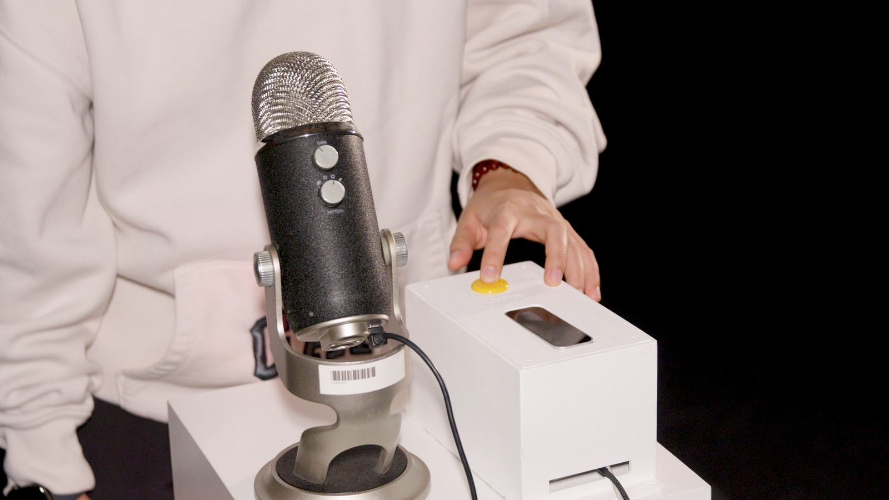
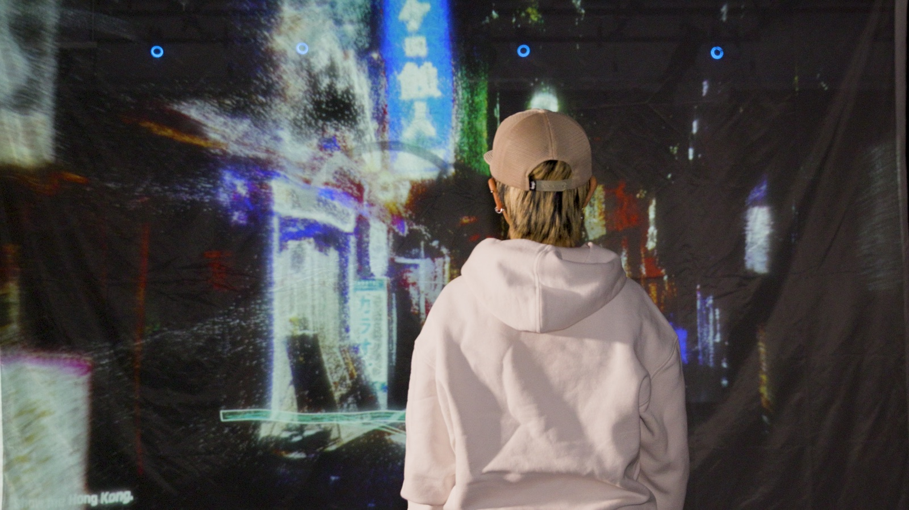
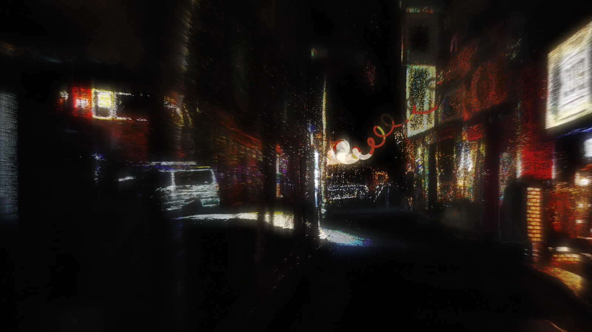
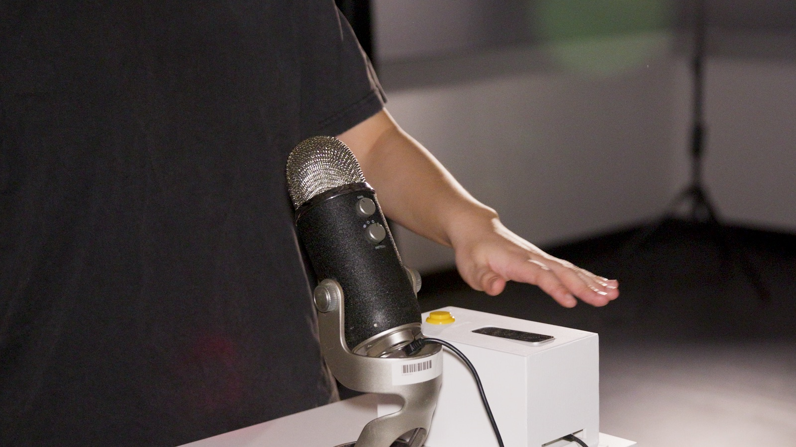
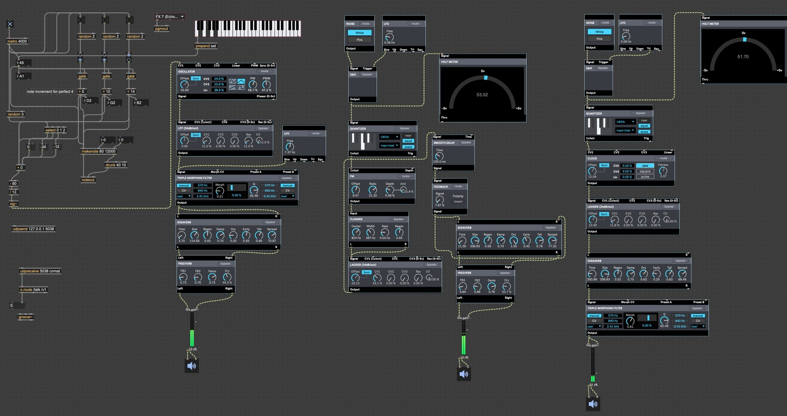
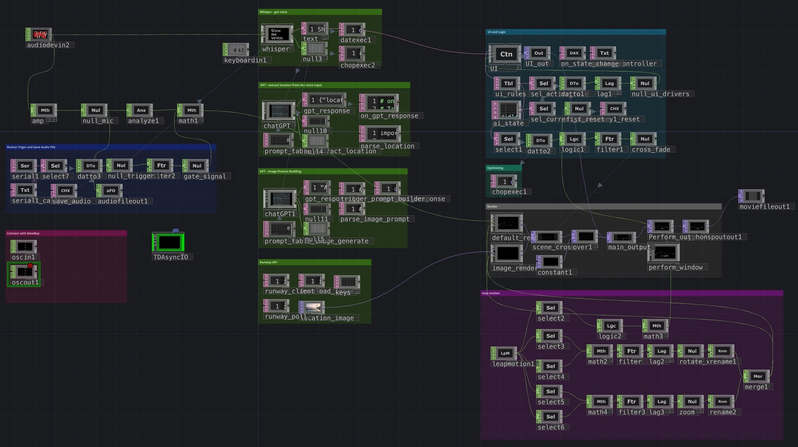
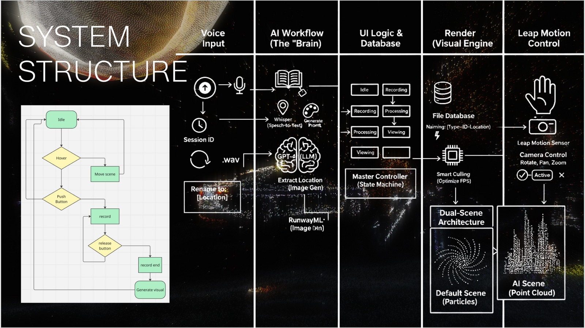

In Between
In Between (2025) is an interactive projection-mapping installation that investigates the permeable boundary between physical environments and their algorithmic reinterpretations.
It challenges the notion of AI as a neutral tool. Instead, it positions generative systems as active interpreters, capable of amplifying, distorting, and re-authoring the world we know. The project is designed to provoke a sense of uncanny familiarity: participants recognize the location yet find it strangely alien, then witness their own bodies actively shaping its unstable digital form. This intuitive, gestural engagement bypasses traditional interfaces, placing the audience simultaneously inside and outside the generated environment. By transforming everyday places into unstable, hybrid environments, In Between offers a powerful reflection on how technology reshapes our presence, our perception, and ultimately, our understanding of what constitutes "real" and "place."







Software used: Touchdesigner, Madmapper, Ableton Live 12, Arduino IDE